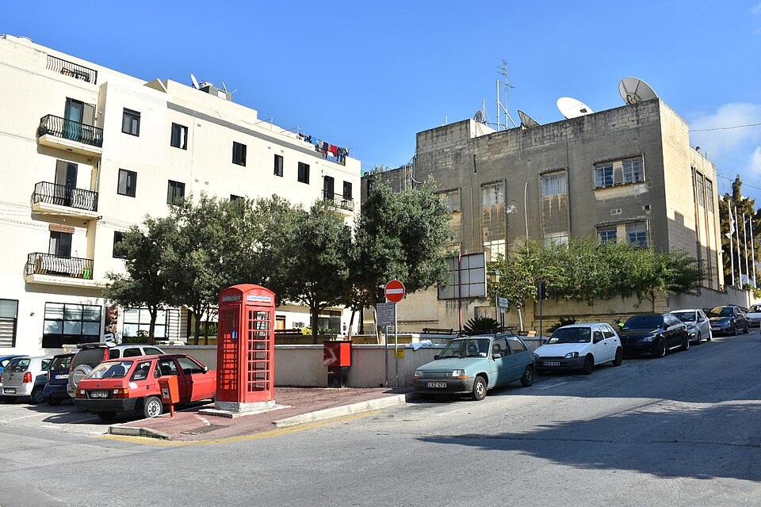

Όταν κάποιος αναζητά iptv premium, συνήθως έχει ήδη δοκιμάσει κάτι δωρεάν ή πολύ φθηνό και έχει απογοητευτεί. Κολλήματα την ώρα του αγώνα, κανάλια που εξαφανίζονται, εικόνα χαμηλής ανάλυσης και καμία απάντηση όταν χρειάζεται βοήθεια. Η λέξη «premium» υπόσχεται το αντίθετο: σταθερότητα, ποιότητα και σεβασμό στον πελάτη. Το ερώτημα είναι αν η υπόσχεση αυτή ισχύει πραγματικά, και πώς μπορείς να το ελέγξεις πριν δώσεις τα χρήματά σου.
Στον οδηγό αυτό εξηγούμε με απλά λόγια τι σημαίνει premium IPTV, ποια χαρακτηριστικά το διαχωρίζουν από τις οικονομικές λύσεις, τι πρέπει να προσέξεις αν ψάχνεις ελληνικά κανάλια, ποιες συσκευές χρειάζεσαι και πώς να αξιολογήσεις έναν πάροχο. Θα δεις επίσης πώς το greek iptv καλύπτει αυτές τις απαιτήσεις, με πάνω από 30.000 κανάλια και τιμές από €10.99 τον μήνα. Στόχος μας είναι να φύγεις με καθαρή εικόνα και να πάρεις απόφαση με βάση κριτήρια, όχι διαφημίσεις.
Αν θες πρώτα να δεις πώς διαφέρει η δωρεάν εμπειρία, διάβασε και το άρθρο μας για το IPTV online δωρεάν. Για την αναπαραγωγή στον υπολογιστή θα βρεις χρήσιμο τον οδηγό για το καλύτερο IPTV player για PC.
Τι είναι το IPTV Premium
Το IPTV (Internet Protocol Television) μεταδίδει τηλεοπτικό σήμα μέσω internet. Δεν χρειάζεσαι κεραία ή δορυφορικό πιάτο: η ροή φτάνει από διακομιστές στην εφαρμογή της συσκευής σου. Το «premium» δεν είναι τεχνική κατηγορία, είναι ένας εμπορικός όρος που οι πάροχοι χρησιμοποιούν για να δείξουν ότι η υπηρεσία τους είναι επί πληρωμή και υψηλότερου επιπέδου.

Τι περιμένει ο χρήστης από μια premium συνδρομή
Στην πράξη, ο χρήστης περιμένει τέσσερα πράγματα: σταθερή ροή χωρίς συνεχή buffering, μεγάλη γκάμα καναλιών και ταινιών, καθαρή εικόνα HD ή 4K και ανθρώπινη υποστήριξη όταν κάτι δεν δουλεύει. Αν λείπει ένα από αυτά, η υπηρεσία δεν δικαιολογεί τον τίτλο.
Από πού προέρχεται η διαφορά στην ποιότητα
Η ποιότητα εξαρτάται κυρίως από την υποδομή. Οι σοβαροί πάροχοι χρησιμοποιούν πολλούς διακομιστές με εφεδρικές διαδρομές, ώστε αν κάποιος πέσει, η ροή να συνεχίσει από άλλον. Οι φθηνές λύσεις στηρίζονται σε έναν ή δύο κοινούς διακομιστές που υπερφορτώνονται τις ώρες αιχμής.
Premium ή φθηνή λύση: οι βασικές διαφορές
Η σύγκριση γίνεται καλύτερα σε συγκεκριμένα κριτήρια. Ο παρακάτω πίνακας συνοψίζει τι συναντάς συνήθως σε κάθε περίπτωση.
| Κριτήριο | Δωρεάν / πολύ φθηνό | Premium |
|---|---|---|
| Σταθερότητα ροής | Συχνά κολλήματα, ιδίως τα βράδια | Σταθερή, με εφεδρικούς διακομιστές |
| Ποιότητα εικόνας | SD ή ασταθές HD | HD, Full HD και 4K |
| Λίστα καναλιών | Μικρή, με νεκρούς συνδέσμους | Μεγάλη και ενημερωμένη |
| EPG (οδηγός προγράμματος) | Συνήθως λείπει | Περιλαμβάνεται |
| Υποστήριξη | Καμία ή αργή | Διαθέσιμη 24/7 |
| Κόστος | €0 έως λίγα ευρώ | Από €10.99/μήνα |
Το κρυφό κόστος του «φθηνού»
Μια συνδρομή των 3 ευρώ που σε αφήνει χωρίς κανάλι σε κάθε σημαντικό αγώνα δεν είναι οικονομική, είναι χαμένος χρόνος. Στο τέλος του χρόνου πολλοί χρήστες έχουν αλλάξει τρεις παρόχους και έχουν ξοδέψει περισσότερα από μια καλή ετήσια συνδρομή.
Πότε αρκεί μια δωρεάν λύση
Αν θες απλώς να δεις ένα-δύο κανάλια περιστασιακά, μια δωρεάν πηγή μπορεί να αρκεί. Για καθημερινή χρήση με οικογένεια, αθλητικά και ταινίες, η premium επιλογή είναι η λογική.
Τα χαρακτηριστικά μιας πραγματικής premium υπηρεσίας
Πριν πληρώσεις, έλεγξε αν ο πάροχος καλύπτει τα παρακάτω. Είναι μια πρακτική λίστα που μπορείς να χρησιμοποιήσεις για οποιαδήποτε υπηρεσία.
Anti-freeze και εφεδρικοί διακομιστές
Η τεχνολογία anti-freeze, δηλαδή η αυτόματη μετάβαση σε εφεδρική πηγή, μειώνει δραστικά τα κολλήματα. Ρώτα τον πάροχο αν διαθέτει πολλαπλούς διακομιστές και πού βρίσκονται σε σχέση με τη χώρα σου.
Ανάλυση και ρυθμός καρέ
Τα αθλητικά θέλουν υψηλό ρυθμό καρέ και καλό bitrate. Μια υπηρεσία που προσφέρει κανάλια 4K και 50 καρέ ανά δευτερόλεπτο στον αθλητισμό κάνει αισθητή διαφορά, ιδίως σε μεγάλη τηλεόραση.
EPG, catch-up και VOD
Ο ηλεκτρονικός οδηγός προγράμματος σου δείχνει τι παίζει τώρα και τι έπεται. Το catch-up σου επιτρέπει να δεις μια εκπομπή που έχασες, ενώ το VOD προσφέρει ταινίες και σειρές κατά παραγγελία. Στο Greek IPTV έχεις πρόσβαση σε πάνω από 150.000 ταινίες και σειρές.
Πολλαπλές συσκευές
Έλεγξε πόσες ταυτόχρονες συνδέσεις επιτρέπονται. Για οικογένειες, η δυνατότητα να βλέπουν δύο ή τρία άτομα ταυτόχρονα έχει μεγάλη σημασία.
Ελληνικά κανάλια και περιεχόμενο στο premium IPTV
Για τον Έλληνα της διασποράς, ο βασικός λόγος να αναζητήσει IPTV είναι τα ελληνικά κανάλια. Εθνικά κανάλια, ειδήσεις, αθλητικά, ψυχαγωγία και παιδικά πρέπει να είναι διαθέσιμα σε καλή ποιότητα και με σωστό πρόγραμμα. Μια υπηρεσία που έχει «πολλά κανάλια» αλλά περιορισμένη ελληνική ενότητα δεν σε εξυπηρετεί.
Τι να ελέγξεις στη λίστα
- Αν περιλαμβάνονται τα βασικά πανελλαδικά κανάλια και οι ειδησεογραφικοί σταθμοί.
- Αν υπάρχουν αθλητικά κανάλια για ποδόσφαιρο και μπάσκετ.
- Αν υπάρχουν παιδικά και ντοκιμαντέρ για όλη την οικογένεια.
- Αν το πρόγραμμα (EPG) εμφανίζεται σωστά στα ελληνικά.
Διεθνές περιεχόμενο ως bonus
Πολλοί συνδρομητές θέλουν και κανάλια άλλων χωρών, για παράδειγμα για τη δεύτερη γλώσσα της οικογένειας. Εδώ βοηθά να γνωρίζεις και άλλες υπηρεσίες της αγοράς, όπως το tilaa iptv ή το romania iptv, ώστε να συγκρίνεις προσεγγίσεις και πακέτα. Για την ελληνική εμπειρία, όμως, μια εξειδικευμένη υπηρεσία όπως το Greek IPTV θα σε καλύψει καλύτερα.
Αν σε ενδιαφέρει να δεις πώς λειτουργεί η υπηρεσία σε Samsung τηλεοράσεις, δες τον οδηγό IPTV στο Tizen.
Συσκευές και εφαρμογές
Μια premium υπηρεσία δεν χρειάζεται ειδικό εξοπλισμό. Αρκεί μια συσκευή με εφαρμογή αναπαραγωγής και σύνδεση στο internet.
Smart TV και streaming sticks
Οι τηλεοράσεις Samsung, LG και Android TV υποστηρίζουν εφαρμογές IPTV player. Το Fire Stick και το Apple TV αποτελούν δημοφιλείς, οικονομικές επιλογές για παλαιότερες τηλεοράσεις.
Κινητά, tablets και υπολογιστές
Σε Android και iOS υπάρχουν πολλές εφαρμογές αναπαραγωγής. Σε Windows και Mac μπορείς να χρησιμοποιήσεις ένα αφιερωμένο πρόγραμμα ή το VLC.
Ρυθμίσεις δικτύου
Για καλύτερη εμπειρία χρησιμοποίησε καλώδιο Ethernet όπου γίνεται, κράτα τον δρομολογητή σε κεντρικό σημείο και απόφυγε βαριές λήψεις την ώρα που παρακολουθείς.
Πώς να επιλέξεις πάροχο
Η επιλογή γίνεται με μια απλή διαδικασία τεσσάρων βημάτων.
- Όρισε τις ανάγκες σου: ποια κανάλια βλέπεις, πόσες συσκευές και τι ποιότητα θέλεις.
- Έλεγξε τη διαφάνεια: σαφείς τιμές, όροι χρήσης και στοιχεία επικοινωνίας.
- Δοκίμασε σε ώρες αιχμής: η πραγματική ποιότητα φαίνεται όταν όλοι βλέπουν.
- Δοκίμασε την υποστήριξη: κάνε μια ερώτηση πριν την αγορά και δες πόσο γρήγορα απαντούν.
Τα προειδοποιητικά σημάδια
Απόφυγε πάροχο που ζητά πληρωμή μόνο με μη ανιχνεύσιμους τρόπους, που δεν έχει κανένα κανάλι επικοινωνίας ή που υπόσχεται «όλα τα κανάλια του κόσμου» για λίγα ευρώ τον χρόνο.
Ασφάλεια, νομιμότητα και καλές πρακτικές
Η νομική κατάσταση του IPTV διαφέρει ανά χώρα και εξαρτάται από τα δικαιώματα μετάδοσης του κάθε περιεχομένου. Είναι δική σου ευθύνη να ενημερωθείς για το ισχύον πλαίσιο στη χώρα που ζεις και να χρησιμοποιείς υπηρεσίες με σαφείς όρους.
Προστασία των δεδομένων σου
Χρησιμοποίησε ισχυρό κωδικό, μην μοιράζεσαι τα στοιχεία σύνδεσης και πλήρωνε μόνο μέσω ασφαλών μεθόδων. Άλλαξε τους κωδικούς σου αν υποψιαστείς κατάχρηση.
Εφαρμογές από αξιόπιστες πηγές
Κατέβαζε εφαρμογές μόνο από επίσημα καταστήματα ή από τον ίδιο τον πάροχο. Τα ύποπτα αρχεία εγκατάστασης από άγνωστους ιστότοπους μπορεί να περιέχουν κακόβουλο λογισμικό.
Μύθοι και πραγματικότητα για το premium IPTV
Γύρω από τις συνδρομητικές υπηρεσίες IPTV κυκλοφορούν αρκετές παρανοήσεις. Ας δούμε τις πιο συχνές, ώστε να μην πέσεις σε παγίδες.
«Όσο ακριβότερο, τόσο καλύτερο»
Η τιμή από μόνη της δεν εγγυάται ποιότητα. Μια υψηλή τιμή χωρίς εγγυήσεις, χωρίς δοκιμή και χωρίς υποστήριξη είναι εξίσου επικίνδυνη με μια πολύ χαμηλή. Αυτό που μετράει είναι η αναλογία τιμής και υπηρεσίας, καθώς και η διαφάνεια του παρόχου.
«Περισσότερα κανάλια σημαίνει καλύτερη υπηρεσία»
Ο αριθμός των καναλιών είναι εντυπωσιακός στη διαφήμιση, αλλά αυτό που χρησιμοποιείς καθημερινά είναι δέκα με είκοσι κανάλια. Αν αυτά λειτουργούν άψογα και με σωστό πρόγραμμα, η υπηρεσία αξίζει. Γι' αυτό δοκίμασε πρώτα τα κανάλια που βλέπεις πραγματικά.
«Χρειάζομαι ισχυρό internet για όλα»
Μια σύνδεση 25 έως 30 Mbps αρκεί για τις περισσότερες οικογένειες. Το πρόβλημα στις περισσότερες περιπτώσεις δεν είναι η ταχύτητα αλλά ο κακός δρομολογητής, το αδύναμο Wi-Fi ή η υπερφορτωμένη συσκευή αναπαραγωγής.
«Η εγκατάσταση είναι δύσκολη»
Σήμερα η εγκατάσταση απαιτεί λίγα λεπτά. Κατεβάζεις μια εφαρμογή αναπαραγωγής, εισάγεις τα στοιχεία που σου στέλνει ο πάροχος και η λίστα φορτώνει αυτόματα. Δεν χρειάζεται τεχνική γνώση ούτε ειδικός εξοπλισμός, και οι περισσότεροι χρήστες ολοκληρώνουν τη διαδικασία χωρίς βοήθεια. Αν κολλήσεις, η υποστήριξη του Greek IPTV είναι διαθέσιμη να σε καθοδηγήσει.
«Μια συνδρομή αρκεί για όλη την οικογένεια χωρίς όρια»
Κάθε πακέτο έχει συγκεκριμένο αριθμό ταυτόχρονων συνδέσεων. Αν μοιράζεσαι τη συνδρομή με συγγενείς σε άλλη πόλη ή χώρα, σιγουρέψου ότι το πακέτο καλύπτει όλες τις συσκευές που θα συνδεθούν ταυτόχρονα, ώστε να μην υπάρξουν διακοπές τη στιγμή που τις χρειάζεσαι.
Πρακτικές συμβουλές για την καλύτερη εμπειρία
Αφού διαλέξεις υπηρεσία, μερικές απλές κινήσεις κάνουν τη διαφορά στην καθημερινή χρήση.
- Επανεκκίνησε τη συσκευή και τον δρομολογητή μία φορά την εβδομάδα για να καθαρίζει η μνήμη.
- Ενεργοποίησε το buffer της εφαρμογής σε μέτρια τιμή, ώστε να απορροφά μικρές διακυμάνσεις του δικτύου.
- Κράτα την εφαρμογή ενημερωμένη στην τελευταία έκδοση.
- Αν παρακολουθείς σε Wi-Fi, προτίμησε τη ζώνη 5 GHz και μείνε κοντά στον δρομολογητή.
- Σε περίπτωση προβλήματος, επικοινώνησε με την υποστήριξη και ανέφερε συσκευή, ώρα και κανάλι.
Με αυτές τις συνήθειες, ακόμη και μια μέτρια οικιακή σύνδεση αποδίδει πολύ καλύτερα. Και αν δεν είσαι σίγουρος για κάτι, η ομάδα του Greek IPTV σε βοηθά βήμα προς βήμα με την εγκατάσταση και τις ρυθμίσεις στη δική σου συσκευή.
Τιμές και αξία
Το κόστος μιας premium συνδρομής πρέπει να κρίνεται σε σχέση με όσα προσφέρει. Αν συγκρίνεις με τα παραδοσιακά πακέτα συνδρομητικής τηλεόρασης, που συχνά ξεπερνούν τα 40 ευρώ τον μήνα για περιορισμένο περιεχόμενο, η διαφορά είναι εμφανής.
Μηνιαία ή ετήσια συνδρομή
Οι μακρύτερες συνδρομές έχουν συνήθως χαμηλότερο μηνιαίο κόστος. Αν είσαι νέος χρήστης, ξεκίνα με μικρότερη διάρκεια, δες πώς πάει η υπηρεσία και αναβάθμισε μετά.
Γιατί το Greek IPTV
Το Greek IPTV συνδυάζει πάνω από 30.000 κανάλια, πάνω από 150.000 ταινίες και σειρές, ποιότητα HD και 4K, EPG και υποστήριξη 24/7, με πακέτα από €10.99 τον μήνα. Είναι σχεδιασμένο ειδικά για τους Έλληνες θεατές, εντός και εκτός Ελλάδας.
Συνοψίζοντας, το iptv premium αξίζει όταν κάθε ευρώ μεταφράζεται σε σταθερότητα, ποιότητα και υποστήριξη. Αξιολόγησε τον πάροχο με τα κριτήρια που είδαμε, δοκίμασε σε ώρες αιχμής και διάλεξε πακέτο που ταιριάζει στη χρήση σου. Έτσι θα απολαύσεις τα ελληνικά κανάλια, τον αθλητισμό και τις ταινίες χωρίς εκπλήξεις, είτε βρίσκεσαι στην Ελλάδα είτε στο εξωτερικό.